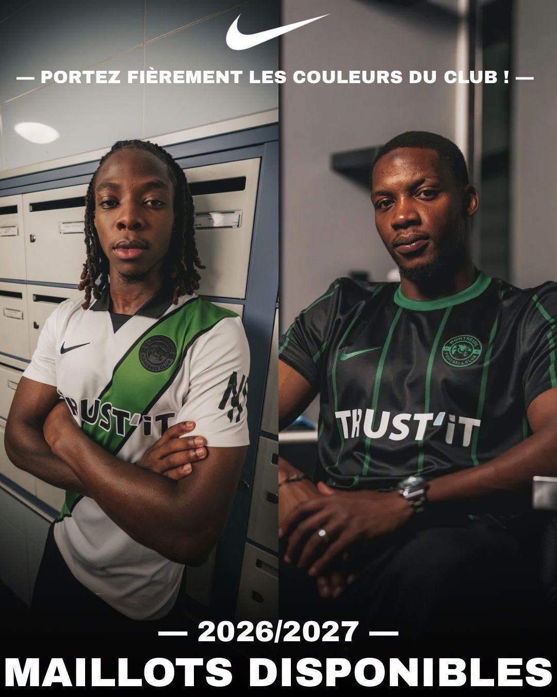
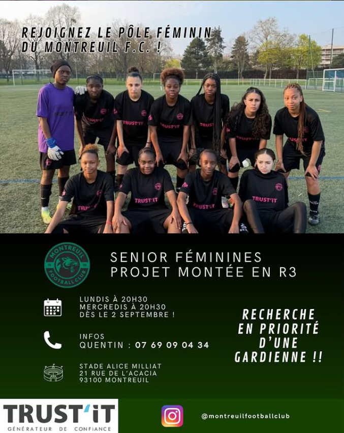
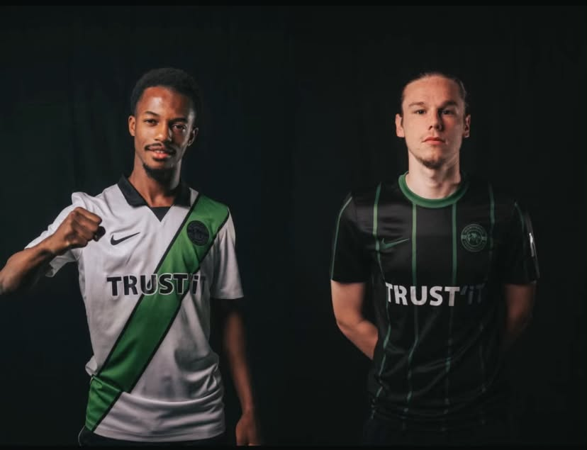
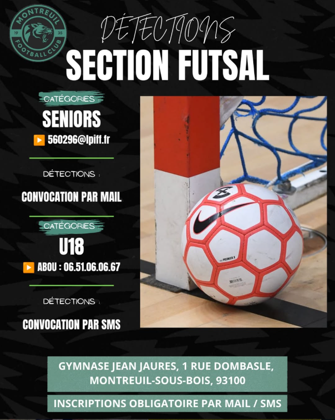
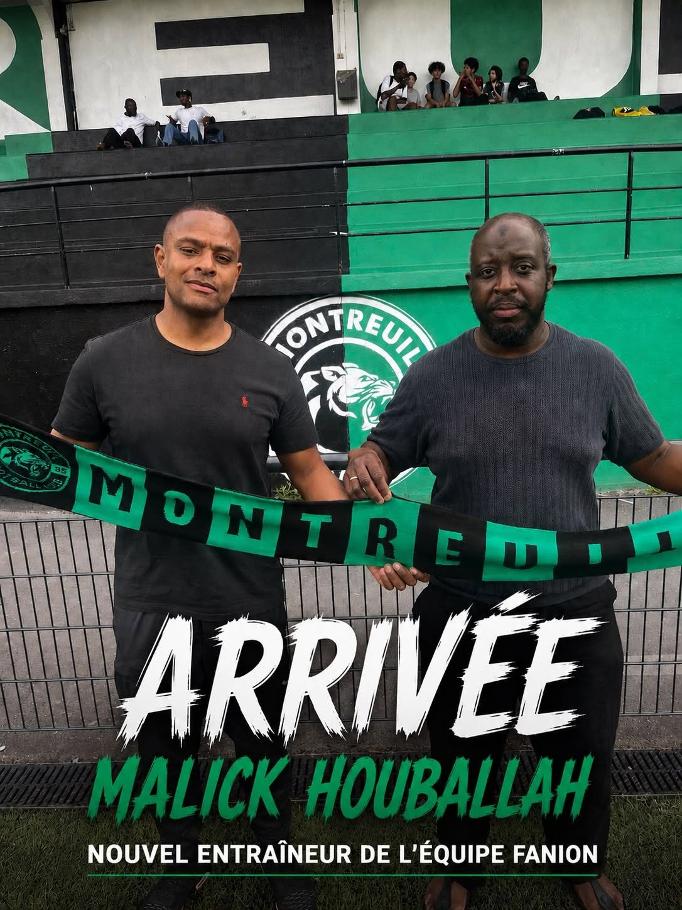

1 septembre 2026
Reprise des entraînements
La saison débute au Montreuil Football Club. Retrouvez sur l’affiche toutes les informations concernant la reprise de nos différentes catégories. Bonne reprise à toutes et à tous.
La saison débute au Montreuil Football Club. Retrouvez sur l’affiche toutes les informations concernant la reprise de nos différentes catégories. Bonne reprise à toutes et à tous.

Le nouveau maillot officiel du Montreuil Football Club est arrivé !
La précommande est ouverte dès maintenant sur notre boutique Intersport. Réservez le vôtre et soyez parmi les premiers à porter les couleurs du club cette saison.

Rejoignez le pôle féminin du Montreuil FC !
Notre équipe Seniors Féminines recherche de nouvelles joueuses pour renforcer son effectif.
Une gardienne est recherchée en priorité, mais toutes les joueuses sont les bienvenues, quel que soit leur poste !
Entraînements : les lundis et mercredis à 20h30 au Stade Alice-Milliat.
21 rue de l’Acacia
93100 Montreuil
Informations : 07 69 09 04 34
Vous souhaitez rejoindre un groupe motivé et relever un nouveau défi ? Venez tenter l’aventure avec le Montreuil FC !

Plus qu’un maillot, c’est l’identité, l’histoire et la fierté de toute une ville. Découvrez le nouveau maillot de notre équipe fanion pour la saison 2026-2027 ! Une ville, un club, une fierté. Allez Montreuil !

Le Montreuil Football Club est heureux d’annoncer la création de sa nouvelle section futsal pour la saison 2026-2027.
Afin de constituer ses premiers effectifs, le club organise des détections pour les catégories Seniors et U18.
Seniors
Les joueurs intéressés sont invités à transmettre leur candidature par courriel à l’adresse suivante :
📧 560296@lpiff.fr
Une convocation sera envoyée par courriel aux profils retenus.
U18
Les joueurs intéressés peuvent s’inscrire auprès d’Abou :
📞 06 51 06 06 67
Une convocation sera ensuite envoyée par SMS.
📍 Gymnase Jean-Jaurès
1, rue Dombasle
93100 Montreuil-sous-Bois
L’inscription préalable par courriel ou SMS est obligatoire.

Le club est fier d’annoncer le retour de Rohan Sadala Alain !
À seulement 21 ans, Rohan est un joueur polyvalent capable d’évoluer au poste d’ailier, au milieu de terrain ou encore au poste de latéral.
Originaire de Montreuil, il a découvert le football au Montreuil Football Club avant de poursuivre sa formation à l’U.S. Créteil, au Paris FC, à l’A.S.J. Aubervilliers, puis au centre de formation des Girondins de Bordeaux, où il a évolué de 2019 à 2024, avant de rejoindre l’U.S.L. Dunkerque il y a deux ans. Il arrive aujourd’hui libre au club.
Rohan Sadala Alain :
« C’est avec honneur que je rejoins le Montreuil Football Club. C’est ici que tout a commencé pour moi. Fier de représenter ma ville, je donnerai tout pour aider le club à atteindre ses objectifs. Jouer pour Montreuil est un immense plaisir et une grande fierté. »
Abdoulaye Sow, Président :
« Après le retour de Mahamadou, l’arrivée de Rohan confirme notre volonté de bâtir une équipe ambitieuse en nous appuyant sur des joueurs issus de notre territoire. Son parcours, sa polyvalence et son attachement au club seront de précieux atouts. Nous sommes très heureux de l’accueillir à nouveau sous les couleurs du Montreuil Football Club. Bienvenue à la maison, Rohan ! »
Bienvenue à la maison, Rohan ! 💚🖤

Le club est fier d’annoncer le retour de Mahamadou Sissoko, latéral gauche de 24 ans, au sein de notre équipe première.
Formé au club de U6 à U15, Mahamadou a poursuivi sa formation à l’U.S. Torcy avant d’intégrer le centre de formation du Dijon FCO, où il a évolué des U18 jusqu’en National 3. Il a ensuite rejoint la réserve du Red Star FC en Régional 1, avant de porter les couleurs de l’U.S. Chantilly en National 2 la saison dernière.
Mahamadou Sissoko :
« Très heureux de retrouver mon club formateur, celui où tout a commencé pour moi. C’est un vrai plaisir de revenir dans un environnement que je connais bien et de porter à nouveau les couleurs du club de ma ville. J’ai hâte de commencer cette nouvelle aventure et de tout donner pour l’équipe. »
Abdoulaye Sow, le Président :
« Le retour de Mahamadou est une immense fierté. C’est un enfant du club qui revient avec une belle expérience et des valeurs qui correspondent pleinement à notre projet. Son parcours est une source d’inspiration pour nos jeunes, et nous sommes convaincus qu’il apportera beaucoup à l’équipe cette saison. Bon retour à la maison, Mahamadou ! »
Bienvenue à la maison, Mahamadou ! 💚🖤

Le Montreuil Football Club est heureux et fier d’annoncer l’arrivée de Malick Houballah au poste d’entraîneur de son équipe première.
Cette arrivée a une saveur particulière, puisque Malick connaît parfaitement la maison. Ancien joueur du club, il a porté les couleurs du Montreuil Football Club avec passion et détermination. Aujourd’hui, c’est dans un nouveau rôle qu’il revient au sein de son club de cœur, avec l’ambition de poursuivre le développement de notre projet sportif.
Son parcours dans le football francilien témoigne de son expérience et de sa connaissance du haut niveau régional. En tant que joueur, il évolue notamment sous les couleurs du Levallois Football Club en CFA et CFA 2 avant de rejoindre le Montreuil Football Club en Régional 1. Il terminera ensuite sa carrière de joueur à Saint-Leu 95 Football Club.
À l’issue de son parcours sur les terrains, Malick se tourne naturellement vers le métier d’éducateur. Animé par la même passion et les mêmes exigences, il débute sur le banc de la réserve de Saint-Leu 95 Football Club avant de prendre les commandes de l’équipe première en Régional 1. Il poursuit ensuite son évolution au sein du Red Star Football Club, où il dirige l’équipe réserve évoluant également en Régional 1.
La saison dernière, il était à la tête de l’Entente Sportive Ermont où il a réalisé un excellent travail, permettant au club de terminer sur le podium.
Reconnu pour ses qualités humaines, son exigence et sa vision du jeu, Malick arrive avec l’envie de transmettre son expérience, de poursuivre la progression du groupe et de porter haut les couleurs du Montreuil Football Club.
L’ensemble du club lui souhaite la bienvenue et beaucoup de réussite dans cette nouvelle aventure.
Bon retour à la maison, Malick ! 💚🖤